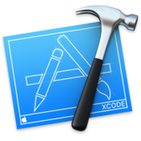

What is Mobile Development?

On this page, I will focus on the two main platforms that come to mind when discussing mobile application development: iPhone (iOS) and Android.
iOS Development
iOS is the operating system that Apple mobile products run on, e.g. the iPhone. Developers who program for iPhones use a program called XCode. iOS application developers have 2 options when it comes to choosing a programming language for their projects: Objective-C and Swift. Swift is a programming language created by Apple themselves to replace the slowly dying Objective-C.
Let's have a look at the image above of the iOS development environment, XCode. On the left side of the screen you will notice a graphical UI design screen where programmers can design the look of the app's UI without any code. Then in the middle section, the code that controls the application is seen. On the right is where the properties of UI elements can be modified to the designers liking.
Android Development
The other most popular operating system for mobile devices is the Android operating system. Android applications are programmed in the very popular Java programming language, which is useful for developers who have previous experience with the language in other realms. Unlike iOS development where programmers are forced into using Apple's XCode software, Android devs have more freedom. The two most popular environments for Android application development are Eclipse and Android Studio. Eclipse is a fully featured IDE (more on those on the IDE page) whereas Android Studio was created for the sole purpose of Android application development.
Here's a screenshot of a basic application being developed on Android Studio. As you can see, it is very different from the iOS example. UI elements are added to the app programmatically in an XML file, which is very similar to HTML! Not seen in the image is the Java code that controls the logic of the app, but it is an extremely powerful language with extensive documentation on the web.